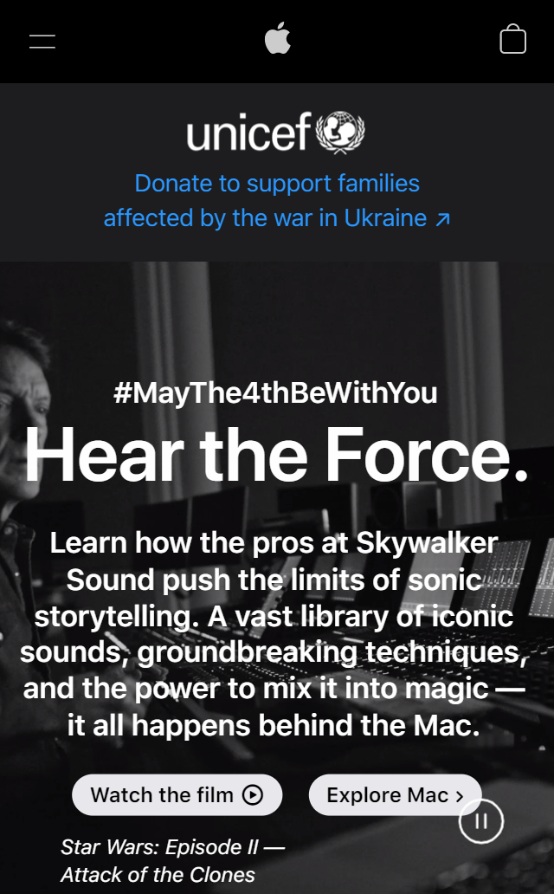
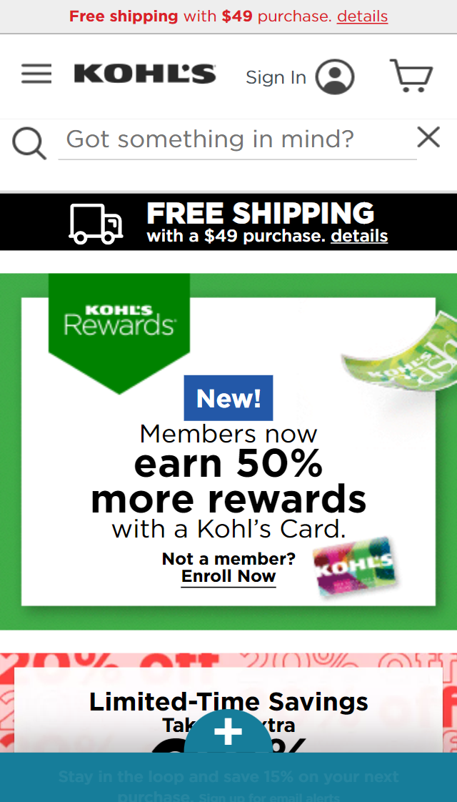
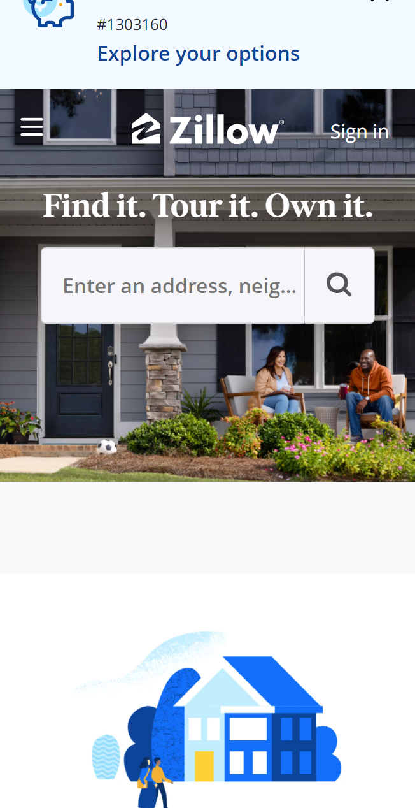

Visual Hierarchy
Apple Inc.
apple.com The apple website is usually set up to showcase each item seperately. The website, the first element is Unicef. It is arranged in its own block with color contrast to draw the users attention to their donation opportunities. The rest of the page is in a black and white contrast with different font sizes to draw your attention to each piece of information relayed in that items block element. As you continue scrolling the next item has it's own visual hierarchy.
Rule of Thirds
Kohls Shopping
kohls.com The rule of thirds in photography is in adjusting the subject to be in 1/3 of the picture and allowing more background. Generally, the subject is either placed in the first or last 1/3 of the photo. In a webpage, having all of the content on one side or the other does not make sense, but it does make sense to try and center everything. This website keeps the main content centered to draw the focus towards whatever information or content is displayed. There is plenty of whitespace and it gives the user more ability to find the main subject matter, rather than search for it. For instance, in the first block element, the word "New!" is centered with a contrasted background. Anyone looking for their new products would know to look there.
PRAC: Proximity
Zillow
zillow.com PRAC: Proximity rule is a web design tactic to bring relative items together. If you wanted to create a search option on your website, it would be bad practice to put a reference of file downloads next to the search toolbar. The proximity rule makes it easier for the user to find specific and related content. On the Zillow website, the search tool is next to their logo that reads "Find it. Tour it. Own it." As you continue scrolling, the website continues this pattern with each of their individual services. For instance, the buy a home option has a brief decription and a button that leads to homes for sale. In that area, no information or content is not related to that specific content.